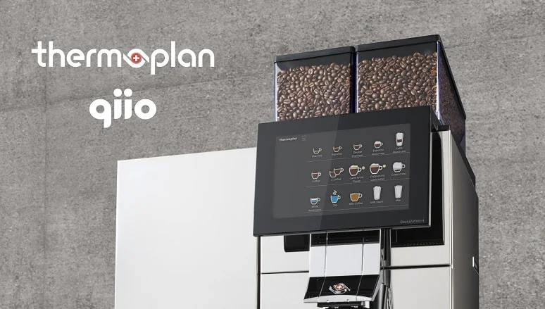

Zürich, 8. Oktober 2019 – Die Schweizer qiio AG (gesprochen »kio«),
führende Anbieterin vollständiger, end-to-end Internet-der-Dinge(IoT)-Lösungen vom Sensor bis zur Cloud, gab
heute eine Partnerschaft mit der Thermoplan AG, Herstellerin der gewerblichen Black&White-Kaffeemaschinen,
bekannt. Seit 1999 ist Thermoplan exklusive Lieferantin vollautomatischer Kaffeemaschinen für eine der
weltweit grössten Kaffeehausketten.
Überbrückung einer Informationslücke: Maschinenauslastung
Beim Kauf einer gewerblichen Kaffeemaschine wird in der Regel ein Wartungsvertrag abgeschlossen. Meist
wissen die Hersteller aber nicht, wie stark ihre Kaffeemaschinen tatsächlich in Anspruch genommen werden –
ob also eine Maschine 2 oder 60 Tassen Kaffee pro Stunde brüht. Ohne Echtzeitdaten zur Überwachung der
Maschinenauslastung erfolgen die monatlichen Wartungstermine bei einigen Maschinen zu häufig, bei anderen,
im Dauereinsatz befindlichen jedoch zu selten.
Anbindung von Kaffeemaschinen an die Cloud
Dank integrierter Sensoren sowie der IoT-Konnektivitätshardware und der Cloudplattform von qiio kann
Thermoplan die Auslastung der Maschinen sowie andere wichtige Faktoren nun remote und in Echtzeit
überwachen. Der Vorteil: Die Techniker müssen nur noch dann ausrücken, wenn tatsächlich Wartungsbedarf
besteht, wodurch die durchschnittliche Anzahl der Einsätze pro Maschine und Jahr sinkt. Angesichts der
Tatsache, dass weltweit Tausende Thermoplan-Maschinen im Einsatz sind, ergibt sich so eine jährliche
Kostenersparnis in Millionenhöhe.
»Unsere Kunden erwarten reibungslos funktionierende Maschinen mit möglichst geringen Ausfallzeiten«, sagt
Sylvia Schöberl, Head of Marketing. »Für Thermoplan stellen die Wartungsarbeiten einen erheblichen Teil der
Gesamtkosten dar. Mit der IoT-Lösung von qiio haben wir hier ein optimales Gleichgewicht zwischen
Kundendienst und Kosteneffizienz hergestellt. Dies wiederum sichert die Geschäftsgrundlage unserer Kunden,
nämlich die zuverlässige und reibungslose Zubereitung von erstklassigem Kaffee.«
»Die enorme Zahl der im Einsatz befindlichen gewerblichen Thermoplan-Kaffeemaschinen ist genau der Bereich,
wo das Potenzial der IoT-Lösungen von qiio voll ausgeschöpft werden kann«, kommentiert Felix Adamczyk, CEO
von qiio. »Wir vereinfachen das oft komplexe remote Assetmanagement, wodurch sich Thermoplan wieder ganz auf
sein Kerngeschäft konzentrieren und den Kunden in die Lage versetzen kann, optimalen Kaffeegenuss schnell,
zuverlässig und kosteneffizient zu bieten.«
Unkomplizierte IoT-Konnektivität mit qiio
Thermoplan wandte sich an qiio, als es darum ging, das IoT-Überwachungssystem seiner Kaffeemaschinen durch
eine sichere drahtlose Plug-and-Play-Konnektivitätslösung und cloudbasierte Monitorplattform zu ergänzen.
Über die IoT-Concentrator-Hardware und die sichere WLAN-Konnektivitätslösung von qiio werden Sensordaten
erfasst, verdichtet, verschlüsselt und direkt an eine sichere Cloudplattform übermittelt, die ein
Remote-Monitoring-Dashboard von qiio hostet. Die Lösung von qiio umfasst auch einen nahtlosen Migrationspfad
von WLAN zu Mobilfunk und damit eine zukunftssichere IoT-Anbindung von Maschinen selbst an den entlegensten
Orten.
Über qiio
Die qiio AG bietet vollständige, durchgängige IoT-Lösungen einschliesslich Hardware, Software,
Konnektivität, Cloudservices und Betrieb. Ein Onlinedashboard bietet den Kunden umfangreiche Möglichkeiten
zur sicheren Vernetzung, Überwachung und Steuerung ihrer Produkte. qiio vereinfacht IoT-Technologie durch
Lösungen »von der Stange«, die sich innerhalb von vier bis acht Wochen auf spezifische Kundenanforderungen
zuschneiden lassen. Die Technologie des in Zürich, Schweiz, ansässigen Unternehmens eignet sich hervorragend
für Logistik, Fernüberwachung und vorausschauende Instandhaltung. Weitere Informationen finden Sie unter
www.qiio.com
Über Thermoplan
Die 1974 im schweizerischen Weggis gegründete Thermoplan AG produziert vollautomatische Kaffeemaschinen in
modernem Design für die gehobenen Ansprüche des weltweiten Hotel-, Restaurant- und Gastronomiesektors. Jede
Kaffeemaschine ist ein einzigartiges Stück Handwerkskunst – dafür sorgen nicht zuletzt die Mitarbeitenden
des Unternehmens mit ihrer Schweizer Arbeits- und Berufsethik. Thermoplan ist durch professionelle
Geschäftspartner in 75 Ländern vertreten und verfügt über ein weltweites Netzwerk von mehr als 200
zertifizierten Vertriebs- und Servicepartnern.
www.thermoplan.ch